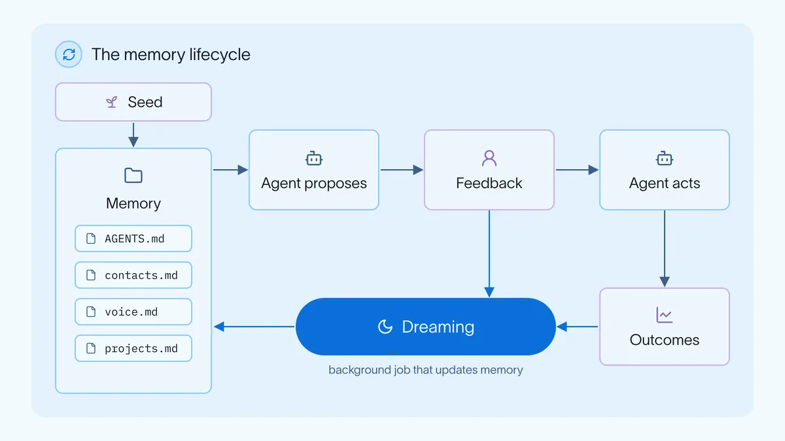
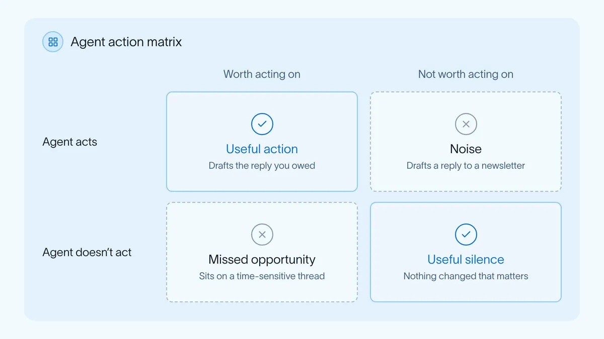

主動代理：目標取代任務，注意力才是瓶頸
導讀原文：LangChain 部落格，檢討自家兩個主動代理（業務 GTM Agent、工程 Robin）的實作，主張記憶與 UX 是關鍵——廠商技術部落格，成效數字皆為自述
主動代理的難處不在會不會做事，而在判斷什麼值得打擾你；LangChain 的答案是記憶加上 UX。
原文用帶新人比喻：第一週給小任務，之後給大任務，最後只丟一個目標讓他自己拆。
代理現在也能這樣帶。差別是被指派的是目標而非任務——原文引 Hone 對自家 Engines 的說法。
目標讓代理吃得下橫跨數天、數週的難題；代價是它會自己決定何時回報，而每次回報都花掉你的注意力。
於是瓶頸從模型能力換成人：代理接的目標愈多，你的注意力愈稀缺。
| 觸發來源 | 原文例子 | 誰按下啟動 |
|---|---|---|
| 真實世界事件 | 新郵件、新開的 pull request | 環境裡的他人 |
| 開發者設的排程 | 每晚更新記憶的工作、每週掃過期 PR | 寫代理的人 |
| 代理自己設的排程 | 明天追蹤某個討論串、使用者要求的每日簡報 | 代理本身 |
本站整理，非原文圖；原文以三類文字陳述觸發，未給「誰按下啟動」這一直行對照。
兩個內部代理三種都用上：Robin 的審查由「有人開 PR」這個事件啟動；GTM Agent 的每日簡報，跑的是它自己在使用者要求後建立的排程。
兩者都建在 Managed Deep Agents 上，起點不是使用者當場下的指令。
換句話說，多數時候沒有 prompt、沒有人盯著——代理醒來的那一刻，你不在場。
記憶：決定它打擾你的品質
醒來時沒有你在旁說明要什麼。連接器（信箱、行事曆）只給當下的事實，「你在意什麼」只能從記憶來。
原文的例子是行政助理代理：老闆講明天上線的那封信要標，電子報不要。要分辨這兩者，靠的就是記憶。

三種訊號各綁一個時間點。seed 是過去：例如從你的寄件備份起步，先學會你的語氣與往來對象。
feedback 是現在：你改寫草稿，或附上理由退回，它才知道你的判斷。outcomes 是未來：草稿寄出後有沒有回覆。
存起來不難——原文說記憶往往就只是一個檔案。難的是它長大之後還有用，因為代理會照它記得的東西行動。
| 維護問題 | 原文定義 | 原文例子 |
|---|---|---|
| Salience | 什麼值得存、每條資訊多重 | 原文未舉例 |
| Expiry | 資訊何時過期 | 已經過去的那個上市日 |
| Duplication | 新舊合併，不存第二份 | 兩份副本日後互相矛盾 |
本站整理，非原文圖；原文為三條列點，未給此「定義／例子」對照。
不少主動代理用「dreaming」處理：一個排程背景工作，讀最近的 trace，在下次執行前更新記憶。
有沒有幫上忙，其中一種方法是挑對指標：助理代理看草稿從送出到被核准多久、寄出的信多常收到回覆。
通用的一條是「你實際動手的 check-in 佔比」——原文認為任何主動代理都值得盯這個數。
記憶也是自主權的來源：不再犯同一個錯，才換得到更多授權。例如你不再改它提的會議時間，就可以放手讓它自己訂。
UX：把注意力花在值得的地方
主動代理通常帶著一個問題或一件待核准的事出現。呈現方式決定你回它，還是把它靜音。

第一條是高訊號。新郵件抵達不代表該動作；GTM Agent 的審核介面把對話分成三類：等你回、需要草稿、不需要回。
Slack 更難。Robin 用 Jev 當決策模型，判斷什麼時候該加入對話，而不是硬插話或等人 tag。
第二條是為審核而設計。審核是把你的品味寫回記憶的通道，而品味往往是開放式工作裡最重要的脈絡，卻很少有地方把它寫下來。
GTM Agent 原本靠 Slack 消化待審草稿，太慢，於是團隊替它做了一個專門介面。
第三條是在你原本工作的地方。代理住在 Slack，可私訊、可 tag，同事也看得見別人怎麼用。
同一個討論串裡，它能自己排後續追蹤、把報告貼回來；貼文刻意短，Robin 用一兩句標題，細節放回覆。
開 PR 時它附一行摘要、變更大小與認領按鈕——你掃一眼就知道要不要接手。
原文的收尾是換對象：過去三年替模型做 context engineering，現在要對人做同一件事——對的時間、對的格式、對的脈絡。
人的 context window 一樣有限。記憶與 UX 都到位，check-in 才會像帶得起來的新人：愈來愈準，也愈來愈少。
帶走三件事
目標化是分水嶺。代理自排時機後，稀缺資源就是你的注意力。
記憶是信任的資本。記得回饋的代理，才配拿到更多自主權。
UX 決定被採用或靜音。高訊號、好審核、在你原本的工作現場。
同一主題的其他館藏
導讀為本站編輯內容（AI 摘解自原文與館藏重點，非官方文件）；逾 70% 排程佔比等數字為 LangChain 自述，無第三方驗證。原文配圖取自官方部落格，表格為編輯整理並已標註。內容經對照原文的獨立事實審查後發布。